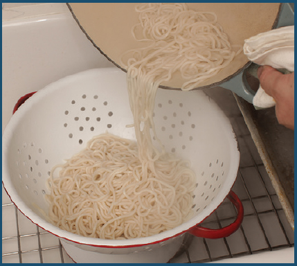
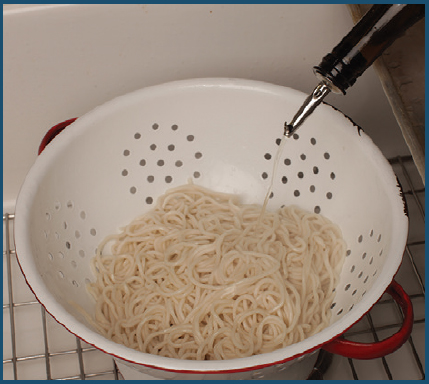
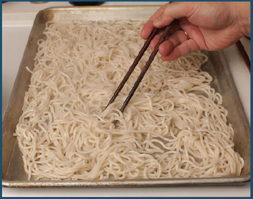

I remember walking into a small ramen shop in Tokyo with my late grandmother, Yasuko, when I was much younger. When we sat down and I ordered the kamo soba—buckwheat noodles with hot duck broth—my grandmother started giggling at my choice, explaining that it was crazy to order hot noodles on such a muggy, sweltering summer day. She instead opted for the hiyashi chūka, a cold noodle salad made with chilled ramen noodles, a variety of fresh vegetable toppings, and a vinegary dressing that you toss together at the table.
She was right, of course, as grandmothers tend to be.
If the first thing that comes to mind when you think of cold pasta is the globs of glistening mayo that coat American-style pasta salads that compete with the barbecue as the biggest gut-bomb on the picnic table, prepare to have your world turned upside down, because cold noodle salads dressed in bright, tangy sauces with fresh flavors are about as light and refreshing as a meal can get. What’s more, they make prep a breeze, as noodles can be precooked, dried, and stored in the fridge right until you’re ready to dress them without any loss in quality, making them the ideal food for a picnic, a potluck, or a quick midday meal.
AIR-DRYING COLD NOODLES FOR SALADS
Chilling cooked noodles by running them under cold running water is fast and easy, and in general it works fine if you’re in a hurry and perfection is not your goal, but it has a couple of downsides. First, it rinses away excess surface starch, which means that sauces will have a harder time clinging to them. Second, they end up wetter, as cold water doesn’t evaporate very readily, which in turn will water down your dish.
For the best cold noodles, it’s a good idea to cool your noodles naturally in the air. Here’s how you do it.
Step 1 • Drain
Drain your noodles through a fine-mesh strainer or colander in the sink (reserve some cooking water if the recipe calls for it).

Step 2 • Toss with a Little Oil
Use a pair of chopsticks to toss the noodles directly in the strainer with a little bit of oil—a couple of teaspoons per pound—to prevent them from sticking together.

Step 3 • Spread Them Out
Spread the noodles out on a rimmed baking sheet large enough to hold them in a thin layer (use multiple trays if drying a large batch).

Step 4 • Cool Them
Let the noodles cool naturally, moving them around occasionally with a pair of chopsticks to make sure they are not sticking together. A desk fan or a manual fan can speed this process along, though even in still air it takes only 10 to 15 minutes.
Once the noodles are cooled, you can proceed with the recipe or transfer them to a sealed container and store them in the refrigerator for several days.